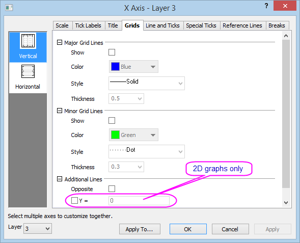
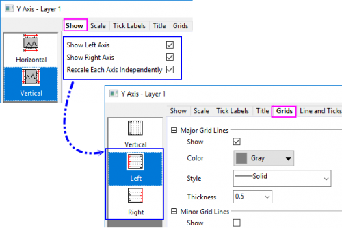

Die Registerkarte Gitternetze
AxesRef-Grids
Diese Registerkarte verfügt über Bedienelemente für Achsengitternetzlinien, einschließlich Stil, Position etc. der Gitternetze. In 2D-Diagrammen können Sie die vertikale und horizontale Richtung getrennt voneinander benutzerdefiniert anpassen; in 3D-Diagrammen gibt es drei anzupassende Richtungen (X, Y und Z).

 |
Seit Origin 2023 gibt es, wenn Sie die rechte und die linke Y-Achse anzeigen und Jede Y-Achse unabhängig neu skalieren auf der Registerkarte Zeigen aktivieren, zwei getrennte vertikale Symbole Links und Rechts, mit denen Sie die Gitternetzlinien für die linke und die rechte Y-Achse separat benutzerdefiniert anpassen können.

|
Layerauswahl
Bevor Sie die Elemente der Gitternetzlinien benutzerdefiniert anpassen, können Sie die Layerliste verwenden, um zwischen Layern in einem Diagramm mit mehreren Layern zu wechseln.

Haupt- und Nebengitternetzlinien
Zeigen
Aktivieren Sie das Kontrollkästchen Zeigen, um die Hauptlinien anzuzeigen. Hauptgitternetzlinien sind gerade Linien, die von großen Hilfsstrichen ausgehen.
Farbe
Legen Sie die gewünschte Farbe in der entsprechenden Auswahlliste fest.
Stil
Wählen Sie den gewünschten Linienstil in der entsprechenden Auswahlliste.
Dicke
Geben Sie die gewünschte Liniendicke (in Punkten) im Kombinationsfeld Dicke oder wählen Sie sie aus.
Zusätzliche Linien
Gegenüber
Aktivieren Sie das Kontrollkästchen Gegenüber, um eine gerade Linie gegenüber der aktuellen Achse anzuzeigen.
Y =
Aktivieren Sie das Kontrollkästchen Y= (oder X=), um einen Wert in das Feld einzugeben und eine gerade Linie hinzuzufügen.
Hinweis:
- Für 2D-Säulen-/Balkendiagramme ist das Kontrollkästchen Y=/X= aktiviert und standardmäßig auf 0 gesetzt. Sie können einen anderen Wert in das Bearbeitungsfeld eingeben, ab dem die Säule bzw. der Balken beginnt.
- Wenn der Y- oder X-Wert, der hier eingegeben ist, über den Achsenbereich hinausgeht, wird die zusätzliche Linie standardmäßig verborgen. Wenn Sie sie anzeigen möchten, können Sie die Systemvariable @SAL auf 0 setzen. Bei der älteren Version als Origin 2022b wird die zusätzliche Linie in diesem Fall per Standard angezeigt. Sie müssen sie manuell deaktivieren.
|